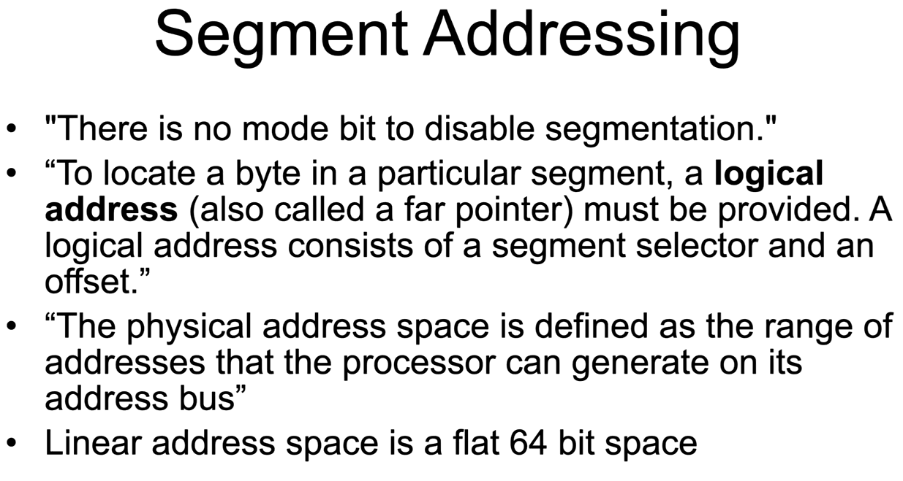

Segmentation
There are few segmentation models, non of them is really in use.- Multi-segment model
- Segmented memory model
- Flat memory model
The model in use in most systems is closly similar to the flat model.

The pointers include a 16-bit Segment selector, which is stored in a segment register.
Pointers in 32-bit:

Pointers in 64bit:

In Real-Mode, when PC is started, there is no paging, therefore Linear Address == Physical Address


The way segment regiseters were used de-facto is

but GS and FS base are stored in MSRs, so its actually